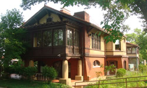

H. Sam Priest Center for International Studies
Address: 8270 Big Bend Blvd.
Built in 1905 (some sources say 1908); sun room on the first floor and space on the second floor added in 1914 (some sources say 1916).
18 rooms include: two living rooms, one dining room, one kitchen, one library, two sunrooms, three porches, one laundry, eight bedrooms, two dressing rooms, five bathrooms.
Size of main house: over 5,000 square feet (some sources say 8,000 square feet after addition)
Size of carriage house next door: 1750 square feet; includes a four car garage, one laundry room, three rooms and a bath.
Original owners: James H. and Nellie A. Howe. James Howe, a pharmacist, conducted the research in this building which resulted in the invention of Tums antacids. His son, James Howe, Jr., passed away June 12, 1989.
Original architect: Charles S. Holloway
Original cost: $7,500; cost of addition $4,824
Webster University Acquisition
Purchased by Webster University in December 1989. Estimated price: $325,000
Renovation architects: Gornet & Vogt
Renovation contractor: Robert Piskulich & Associates of St. Louis
Interior design consultant: Mary Strauss
Named for Sam Priest in January 1990. Priest was elected clerk of the St. Louis Circuit Court in 1934. Served as president of the St. Louis Police Board in 1946, 1957, and 1961. Established the Police Academy and the Mobile Reserve Unit. Elected "Man of the Year" by the St. Louis Globe-Democrat in 1964. Died in 1987 at age 81.
References
Grodsky, Dawn. The Howe House Examined: Mansion Remains Mystery Element of Phase II Development. The Journal, vol. 23, no. 9, November 3, 1988, p. 7
Graham, Brad L. Webster to Acquire Howe House; Funds Pending. The Journal, vol. 25, no. 1, August 31-September 7, 1989, p. 3
Morris, Ann. (2005). A new century in Old Orchard: Historic walking tour. Webster Groves, MO: Webster Groves Historical Society.
Webster University's Most Recent Acquisition: the Howe House. The Journal, vol. 25, no. 11, November 16-29, 1989, p. 11
Webster University to Name Building for H. Sam Priest. Alumni Update, Summer 1990, p. 3
Graham, Brad L. Webster Gains New Building; International Studies Expand. The Journal, vol. 26, no. 1, January 18-25, 1990, p. 3
Area Architects Tour Priest Center During Open House. The Journal, vol. 33, no. 13, April 15-22, 1993, p. 10
Pritchett, Shannon. This Old House. The Journal, vol. 51, no. 10, March 28 - April 3, 2002, p. 14.